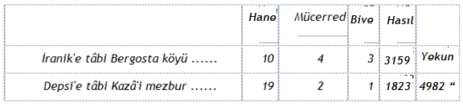

Osmanlı Tarihine ve Dirlik Düzenine birkaç sözcükle bir anı deneyelim.
Osmanlılık, daha adımını Tarihe atarken, son kertede saygı beslediği Bilginlerle yola çıktı. Ama Osmanlû: "Teorici" olmaktan çok uzaktı. Okuryazar bile değildi. Osmanlû: yaradana sığınıp sırf yaptı. Dirlik düzenini yaptı, toprak ekonomisine kalıp gibi tıpatıp uygun gelen Devlet düzenini yaptı. O zaman işler böyle idi. İnsanlar yaparlardı. Sonra Allahın (Toplum gidişinin) dediği olurdu. Ve en sonunda da olanlar kitaba, deftere, Tarihe sokulurdu.
15. ci yüzyılın sonları, Osmanlı'nın kendi kendisi üzerine bir muhasebeye, yahut "Mürakabeye" (Mistikçe otokritiğe) daldığı çağdır. O zamana dek gözükara bir atılış ve boğuş içinde bulunan Osmanlı, yazı ile pek başı hoş olmadığı için, başından geçenleri not etmiye bile vakit bulamıyordu.
Onun için 1'inci Osmanlı Devleti (Osman Gaazi'den Yıldırım Beyazit'e dek), karda gezip izini belli etmemiş gibidir. Ancak 2'nci Osmanlı Devleti, "Ebil Feth: Fetih'in Atası" denilen Mehmet İstanbul'u ele geçirince, İnsanlığın Uygarlık Tarihinde çığır açtığını sezmiş, ne olduğunu, nasıl olduğunu artık araştırıp "kitaba" geçirmek gereğini daha temellice göze almıştır.
Yazarı bilinmiyen ilk Osmanlı Tarihi: "Tarih'i Al'i Osman" (Viyana'da bulunur) G: 874, İs. D.: 1470 yılında, Fâtihin ölümünden 11 yıl öncede kalır. Edirneli Oruç bin Adil'in "Tevârih'i Al'i Osman"ı G.: 889, İs. D.: 1493 e, Fâtih'in ölümünden 12 yıl sonraya dek anca uzanır. Bunlar özel denemeler gibidir. Ondan sonraki Aşık Beşezâde diye ünlendirilen Âşık Beşe oğlunun torunlarından DervişAhmet, Orhan Gaazi'nin İmamı İlyas'ın oğlu Şeyh Yahşi'den aktararak "Tevârih'i Âl'i Osman"ı G.: 908, İs. D.: 1502 de keser.
Devletin Tarih yazdırma görevini açtığı çağ, Tefeci - Bezirgân ekonominin Osmanlı Toprak Ekonomisine egemen olmıya başladığı Kaanunî Süleyman zamanlarıdır. Bu da "Şehnâmehân" (Padişahın Eylemleri yazısını okuyan) biçiminde belirir. İlk Şehnâmehân Fethullah, Bir Acem göçmenidir. Ve Kanunî'nin "Gazâ" (Savaş) ları üzerine yarı Türkçe, yarı Acemce bir Manzumeyi kaleme alır. (Ölümü G.: 960-İs. D. 1552). Ondan sonraki 3 Şehnâmehân'ın: Lokman, Kâtip Mehmet, Hikemî diye adları var, kendileri (eserleri) yoktur.
Tarihçi denecek Tarih yazarları, Vak'anüvîs adını aldılar. Bunların yazıları 16 ncı yüzyılın sonu ile birlikte başladı. İlk Vak'anüvîs, Halepli bir hoca olan Naimâ'dır. Yazdıkları 1591 de başlar,1662 de biter. Başlangıç yılı Murat III dönemidir. Bu padişahın Tarihe merak sardığı anlaşılıyor. Çünkü "Tâc'üt Tevârih"i yazan Şeyislâm Sadettin'i de "Hoca Tarihi"ni yazmıya o "memur" etmiş bulunuyor.
Osmanlı Toprak Düzeni üzerine ilk orijinal araştırmalar değilse bile tespit'ler aynı yıllarda görünür.
G.: 1018 (İs. D.: 1609) yılı: Ayn Ali Efendi, Risalesine: "Risâle'i Kavâniyn'iÂl'i Osman Hülâsa'i Mezamiyn'i Defter'i Divan" adını verir. Amaç: kaç tâne "Mîrmiran" (Beylerbeyi), "Ümerâ" (Komutanlar), Kethüda, Defterdar, Timar; her Beylerbeyilikte kaç Sancak, Defter Kethudası, Timar Defterleri, Haslar, Asker, Zeâmet ve Timar Kılıcı, ne gibi "Resm'i Ayin'i Kavâniyn" var; bunu belirtmektir. Ayn Ali'ye göre: "Şimdiye değin bir yere cem ve telfik olunmayıp, bu maddelerden birisi Defterlerden aranıp bulunmak lâzım gelse, her zaman Defterlere tatbik ile bulunmak güç iş olup bu maddelerin bilinmesi dahi önemli iş olmagin" o eksiği tamamlamıştır.
"Ayn Ali kulları nice zaman Divan'ı Adalet Ünvanda kâtip" iken "Defter HakaanîEmini olunca..." "Defter Hakaanîhâlleri son kertede karışık ve altüst (teşviş ve ihtilâl) üzre"dir. Vuran tutanı bilmez. Zaman, Murat III'ün oğlu Mehmet III (Kanunî Süleyman'dan yarım yüzyıl sonraları) dır.
"Örneğin birisi Mahlûl'den (Kadro açığından) bir Mâzûle (İşinden atılmışa) Timar verilse, ol Timar ana müyesser (kolay ele geçer) olmak ihtimali yogidi ki, bir Timar birkaç kimsenin Beratinde (Buyrultuyla elinde) kayıtlı bulunup: "Filân zamandan berû üzerimdedir" deyü niza ederler (çekişirler) idi. Hele Ferâg'ından (gönlüyle vazgeçişten) yahut Mahlûl'den veya Sefere (Savaşa) gelmedüğünden bir Mazûl'e Timar virülse daha önceki Emin'ler zamanında ol Timar verilen şahsın kaydına şerh (yorum) verilmemekle, niceleri ol Timar'ı daha önceki tarihlerle Temerrük'ler (ele geçme belgeleri) ibraz idüp Ruznamçede şerh verilmemekle, anlar dahi berât idüp öncesi sonrasına Berâl olduğu bilinmezdi." (Ayn Ali Risalesi)
Bu manzara neyi gösteriyor? Eldeki ekonomik Osmanlı İstatistikleri, ilk normal ve sıhhatli Dirlik Düzeni üzerine değil, onun bozulma ve hastalanma çağı üzerinedir. Ona göre değerlendirilmelidir.
G.: 1041 (İ. D. 1630) yılı "Koçi Bey Risalesi", aynı manzaranın betterleştiğini açıklar, Görice (Manastır) lı belki Koço adlı hristiyanlıktan dönme Koçi Bey, Murat IV ün (Saltanatı: 1622-1640) açtığı ankete: "Herkes fikir ve düşünce metaını... padişaha arza" başlayınca katılır. Dert durmamış, azıtmıştır:
"Dünya hâllerinin bugüne değişerek kötülük ve kargaşalık (şerr'ü şûr) ve fitne ve fesadın had aşırıya çıkması" (K.B. Risalesi, 18) herkesi "Gamhâr" (üzüntü içici) yapmıştır. İlerici Genç Osman II nin korkunç sonu bütün dehşetiyle anılardadır.
Ne yazarının adı, ne tarihi bulunmayan, ama nefis bir kapak içinde güzel Türkçeyle güzel yazılı: "Timar ve Zeâmet Usulünün Bozulmasına Dair" adlı özet, hemen hemen Koçi Bey Risalesi ile aynı günlere rastlar (1622-1637 ler). Koçi Beyin "Herkes" dediklerinden bir başkasının mıdır, yoksa "Diğer telhistir" (Başka özettir) denildiğine göre Koçi Bey Risalesinin bir özeti midir? Belli değil.
Orada da: "Tüm islâm ehalinin sözbirliği bunun üzerinedir ki mâdemki Zuamâ ve erbâb'ı Tımar (Dirlikçiler) dünya görünüşünde bir türlü düzeltilmez ve din düşmanlarına karşılık verilmez." "Padişahım sağ olsun: bu denlü fesadın ve Hazinenin ve Memleket Reâyâ (Çiftçi) sinin yok olmasına sebep rüşvet olmuştur." (Yazma, İnkılâp Müzesi, 116 K. 52)
G.: 1060 (İ.D.: 1649) yılı Kâtip Çelebi'nin "Neticetün Netice"si;
G.: 1064 (İ.D.: 1653) yılı Sofyevî Ali Çavuş'un, tek fazla sözü bulunmıyan adsız Risalesi, Osmanlı Toprak Ekonomisinin Kanunî Süleyman'dan yüzyıl sonraki durumundan başka bir şeyi anlatmazlar.
Osmanlı Toprak ekonomisinde Dirlik Düzeni nasıl biçimlenir ve işler? Bunu üç kısa Başlık altında izleyebiliriz:
A - Dirlik Düzeninin kuruluşu ve yazılışı
B - Dirlik Düzeninin defterlenip araçlandırılışı
C - Dirlik Düzeninin beratları ve korunuşu
Osmanlı Ortaasya'dan toprağı ile gelmedi. Bütün Osmanlı toprakları kılıç hakkıyla Feth'edildi: Edilir edilmez, topraklar belirli kurallara ve koşullara göre hemen bir düzene konuldu, ve hemen dirlik'leştirildi.
Bu işin başlıca momentleri: Nişancı - Yazu (Tahrir) - Üleştiri (Taksim) - Mansıp - Dirlik maddelerinde toplanır.
Bir yerin Fetih'i üzerine yapılan işlemin klâsik özeti şudur :
"Devletin son derece güvenini kazanmış bir kimse tâyin" edilir. Bir de "Emin" seçilir. Bunlarla kurulan "Heyet" bütün Bölgenin varını yazar. Köylere dek: "Bütün vergi mükelleflerinin adı, mükellefiyet cinsine göre, kaydedilirdi: topraklı, topraksız, evli, bekâr ve ilh.. Ayrıca sanat sahibi, dul, sakat, pek ihtiyar, imam, müezzin, papas ve ilh.. ve her köyün her cins üründen: ne kadar yetiştirdiği, meyva ağaçları, arı kovanları dahil olmak üzere kaydolunur ve nihayet yıllık vergi hâsılı, akça cinsinden olmak üzere tespit olunurdu. Bâzan, -daha ziyade ilk zamanlarda,- akça cinsi yerine ürün mikdarı yazılırdı. Bu arada mer'a, otlak, yaylak, kışlak, orman, akar su ve sairenin de mülkiyeti dikkatle takip edilirdi. İdarî taksimat tespit edilirdi. Sonra Havâss'ı Hümâyun; yâni Devlet Hazinesine, Hâs, Timar, Zeamet sahiplerine, vakıflara, Şahıslara ait toprak tespit olunur ve bu suretle yazılırdı.
"Bu tahrirler sonunda Tahrir Defterleri meydana gelmiştir. İki yazıcı müsveddelerini bir araya getirerek Mufassal denilen bu defterleri tertip edip Nişancı'ya sunardı. Bunlar 2 nüsha olur. Bir de esas bu olmak üzere, yalnız idarî Teşkilâta göre Liva, Kaza, Nahiye, Köy isimlerini Hâsıl mikdarları ve mevcut Timarları kadro halinde gösteren İcmâl Defterleri meydana getirildi. Mufassal Defterlerin başında, ayrıca ait olduğu Eyaletin Kanunnâmesi yazılı bulunurdu.
"Bu Kanunnâme, Devletin o bölgede Câri, Malî, İdârî ve Hukukî teamüllerini ihtiva, vergilerin ne nispette tahsil olunacağını, hangi suça hangi cezanın verileceğini, vatandaşlar arasındaki her türlü hukuki münasebetlerde nasıl tanzim olunacağını izah ederdi. Tahrir'ler tekrarlandıkça yeni Defterler hasıl olur, eskileri Atîkî diye anılırdı. Bir Tahrir daha yapılırsa, Atîkler Köhne, eskiler Atîk olurdu. Yeni Defterlere ise Cedid denirdi. Bugün elimizde Murat II devrinden kalma Tahrir defterleri vardır. Lâkin bunlar ilk Defterler olmayıp, Tahrir'in daha evvelki tarihlerde yapıldığı muhakkaktır. Fâtih devrinde ise geniş bir Tahrir yapılmış olup, onun giriştiği toprak reformu bunlardan anlaşılmaktadır. Bu şekilde mükemmel arazî Tahrir'leri, yalnız Osmanlı Türklerine nasip olmuştur." (Mufassal Osmanlı Tarihi, İskit Yay.,1957, s. 374-375)
"Tahrir" bir Osmanlı icadı değildir. İlkel Sosyalist Toplum, Yukarı Barbarlık Konağında, Tarım ekonomisine girip Kent'i kurunca, yeni üretim yordamının Kenttaşlar arasında Fark İradı yüzünden ayırtlaşmalar yaratabildiğini görmüş olmalıdır. Bunun üzerinde, Tefeci - Bezirgân ilişkiler geliştikçe Kandaşlığın eşitliğini tehlikeden kurtarmak için, Kenttaşlar arasında sık sık yıllık "Tahrir"ler yapılmıştır. Sonra, Kent içinde sosyal Sınıf ayırtlanışı geliştikçe, herkesin varını ortaya döküp Kenttaşlara hesap verme geleneği tavsadı.
Tahrir olayının en klâsik belgesi, Antika Roma Kentinde yapılandır. İslâmlık gibi Osmanlı'nın da, bu metodu Bizans'tan öğrenmiş ve kendi Sosyal yapısına ve eğilimine göre uygulatmış bulunması olağandır. Aynı Tahrir gelenek göreneği, aynı nedenlerle, Osmanlıda da zamanla tavsıyacaktır. Klâsik Tarihçilerimize Osmanlı Tahrir'inin o denli "Mükemmel" görünüşü, zaman içinde en geç gelmiş oluşundan ileri gelebilir. Bütün eski "Tahrir"lerden hemen hemen iz kalmamış iken, Osmanlı Defter'leri bugüne dek yaşayan belgeler olabilmiştir.
İlk Osmanlı bir ülkeyi ele geçirdi mi, oraya NİŞANCI gelir. Nişancı, Osmanlı Devlet makinesinin "Kalemiye" Kolu olarak, 4 üncü "Devlet Sınıfı"na girer. "Defter Hakaanî" kaleminde şeftir.
Türkiye kurulurken, şehir esnaflığı dışında, ülke ekonomisinin temeli: Toprak Üretimi'ne dayanıyordu. Onun için, Toprak Yazımı ve Dağıtımı işiyle uğraşan Nişancılık: en büyük Kalemiye mansıbı (görevi) idi.
Sonraları Fütuhat durdu. Nişancılık ta, önemi gibi adını da değiştirip, (daha gerici koyu Arapça ile) "Tevkiyîlik" oldu. Medeniyet Tarihinde üretim görevini yitiren araçlar güzelsanat aracı olur. Tevkiyîlik te, başka yapacak işi pek kalmayınca, eski kalem kâğıt alışkanlığı ile, işi edebiyata döktü.
Dökmeden önce, Nişancılar gene "yazar"dılar. Ama ona "Tahrir: Yazû" denilirdi: Türkçesi, Toprakları "yazım" (İstatistik) demekti. Yerlerin bir çeşit istatistik olan o sayımı, dökümü yapılır; ardından "Taksim: Üleştiri" başlar: Topraklar karakterlerine göre ilgililere üleştirilir.
TAHRİR (Yazû=Yazım: İstatistik), şu yanları arar: Her "Kariyye" nin (köy'ün) "Nüfus"u (kaç baş insanı), "Hâne"si (kaç evi), "Öşür hasılatı" (ondalık geliri) ve ilh. nedir? Her Kazâ'nın ortak veya başlıbaşına kullanılan Orman'ları, Otlak'ları, ve ilh. hangileridir? Bütün bu şeyler, ayrı ayrı ve dikkatle dosdoğruca "Defter"e geçirilir.
Bu, bir, çeşit Tarım İstatistiği olur. Bu usul, Osmanlıya has değildir. Daha doğrusu, Medeniyete has değildir. Yukarı Barbarlık Konağında: Tarım keşfedilip, Kent kurulunca, eşit Kenttaşlar arasında, eşitsizlik olmasın diye her yıl sıkı yoklama yapılırdı. Roma geleneği, Bizans ve İslâm kanallarıyla Osmanlı Toprak düzenine geçmiş oluyor demektir.
TAKSİM (Üleştirim - Dağıtım - Bölüm) : Mirî Topraklar ilkin çeşit çeşit ve boy boy "DİRLİK"lere ayrılır. Bu Dirlikler, idarecilerinin görevlerine göre: Has, Zeamet, Timar, Ocaklık, Yurtluk, Vakıf ve ilh. adlarıyla bir sıra pay edilmiş yerlerdir.
Her Dirlik, kime "Tevcih" (yöneltim) edilirse, onun işlemi kanuna uygunca Kitaba (Deftere) geçirilir. "Taksim"in bu aşaması, ilkin "Sünûf'ü Devlet" (Devlet Sınıfları) denilen Üst Kat insanları arasında toprak gelirinin:. (Rant - İrat) ın dağıtılması olur.
"Taksim" in ikinci aşaması, Alt Katlar: Politika ve Savaş dışında bilfiil çalışan "Başıbozuklar" (Sivil'ler) arasında yapılır. Asıl gerçek Toprak dağıtımı budur. Her işlenecek toprak parçasına "ÇİFT" adı verilir. Her Dirlik, böyle bir çok "Çiftlik"lere ayrılır.
Dirlik : Toprağın yalnız ve sadece "İrad" (Rant)ının belirli kişilere verilmesidir. Çift: toprağın Tasarruf'unun (işletme, yararlanma hakkının) belirli kişilere verilmesidir. Dirliği alana Dirlikçi, Çift'i alana Çiftçi denir. Çiftçi'ler, sonraları halktan kopuşuldukça daha çok Arapça "REAYÂ" diye anıldı: "Güdülenler" anlamı, Çobanlıktan gelmiş Osmanlı için yerinde sayılırdı.
Mirî Toprağı, Dirlikçi ne işliyebilir, ne kendi hesabına başkasına işlettirebilir, Öztürkçe Çiftçi sözcüğü dururken "Reâyâ" uydurulduğu gibi, Öztürkçe Dirlikçi dururken, ona da arapça "Sahibülerz" (Toprağın sahibi) adı takıldı. Ancak, "Sahibülerz"lerin toprak üzerinde ne Mülkiyet, ne de Tasarruf (işletme, yararlanma) hakları yoktu. Toprağın Rakabesi (Mülkiyeti) Beytülmâl'in, tasarrufu Çiftçi'nin hakkı idi.
Çiftçi - Reâyâ'dan başkasının tasarrufunda toprak bulunmaz mı? Bulunur. Ama o topraklara, Türkçe "yer" demek olan sözcüğün Acemce karşılığı olarak "Zemin" denir. "Yer" yahut "Zemin", söz gelimi "Padişah kulu" denilen askerlerin elindeki toprak parçalarıdır. "Zemin"ler öteki Çift'ler gibi "Defter"e geçirilmezler.
"Harici Raiyet (Çiftçiden başkasının) elinde bulunan yerler üzerine zemin deyû yazılmak kanundur. Ve Padişah Kulu elinde yer bulunsa, müteallik (ilgili) Kullarının üzerine yazılur. Kul Tâifesinin Raiyet (Çiftçiler) gibi Defterde üzerine yer yazılmak Kanun değildir. Kanun." (Kâvânin'i Kadime'i Osmâniyye; İ. Zühtü)
MANSIP: Belli "rütbe" de bir memurluktur. Dirlik: O memurluğa geçirilen kimseye Devletçe verilen geçim (şimdiki anlamıyla Maaş) karşılığı bir çeşit toprak iradıdır.
Mansıplara Dirlik verilmesi, biliyoruz, Osman Gaazi ile başladı. Dirliklerin Sepahî'lere Timar olarak yönetilmesi Murad Gaazi zamanında sistemleşti. Bu bakımdan Tahrir ve Taksim işinin, hiç değilse taslak biçiminde, fiilen (işlemce) ilk Gaazi'ler çağıyla birlikte belirip yerleştiği söylenebilir. Avrupa'da da Ulusların Göçü adını alan Barbar Fütuhatı üzerine yapılan işlemler tıpkı böyle olmuştur.
Ancak, ülke ölçüsünde tüm merkeziyetli bütün bir "Defter Hâkaanî" sistemi, belirtilere göre, İstanbul Fethedildikten sonra, Bizans geleneğinden örneklemeler esinlenerek gelişmiş olmalıdır. "Kaanunî" lâkabını alan Süleyman I zamanında Tahrir ve Taksim, artık yerleşik ilk Osmanlı düzeninin sonuna ermiş en "zabıt ve rabıtlı" biçimine erişir.
Osmanlı İmparatorluğunun Fütuhat çağlarında Özel Kişi Mülkü olan Öşriye ile Haraciyye topraklar, Fâtihlerin sayısı oranında, ister istemez pek azdır. Büyük Topraklar yığını hep "Mirî Arazî", yâni Kamu mülkiyetli'dir. Bu topraklar Dirlikler içinde Çift'lere bölünmüştür. Trabzon Sancak Beyi Ömer'in dediği gibi:
"Anadolu ve Rumeli'de reâyâ elinde bulunan âmme'i erâzinin (tüm toprakların) hali budur. Seb'a seb'îne tis'a mi'e" (Yıl G.: 978, İs. D.: 1570)
Osmanlı Toplumu TOPRAK ekonomisi temeline dayanır. Bu temel, bir çeşit Plân ve İstatistik olan Yazu: Tahrir yoluyla düzenlenir. Tahrir (Yazu: İstatistik) yapılırken 3 Defter tutulur: 1 - İcmal (Özet); 2 - Mefâsıl (Ayrıntılar); 3 - Ruznamçe;
İCMAL (ÖZET) : "Hiyn'i Tahrirde (yazım sırasında) Hâss'ı Hümâyun ve Havâss'ı Vüzerâ ve Ümera ve Arpalıklardır, ve gerek Zeamet ve Timâr'dır, bilcümle her karye kime kayd olmuş ise onu bildirür." (Ayn Ali Efendi: "Risalei Kavânîn'i Al'i Osmân Hülâsa'i Mezâmiyn'i Defter'i Diyvân" (Osmangiller Kanunlarının broşürü ve Divan Defteri iç anlamlarının özeti), Fasl 6 Tevcih'i Kanunî)
Demek "İcmâl" defteri içine: Hem Padişah Has'ı, hem Vezir ve Komutanların Has'ları, hem Emekli veya Azledilmiş (Mülkiye, İlmiye) mensuplarının maaşlarına zam olarak verilen katma ödenekler (Tahsisler) demek olan Arpalıklar, hem de Zeamet'ler ve Timar'lar toptan yazılır. Ve bu yazılış: 1) Köy köy olur; 2) Her köyün Kişi olarak Kime yazıldığı belirtilir.
Yâni "Köy": Yazu birimidir. Dirlikçi (kim olursa olsun) adına yazılı olan köye bağlı kişidir.
MEFÂSIL (AYRINTILAR) : "Her Kariye'nin Reâyâsı ve Öşür Resmi ve ebvâb'ı mahsûlâtı yazılan Defterdir." (A.A.E., Keza)
Ayrıntılar Defterine ise köyün içindeki bütün varlar geçirilir. Bu Varlar başlıca 3 bölüktürler:
1. - Reâyâ (Güdülenler) : denilen üretmenler, Türkçesi Çiftçi'lerdir. Bunlar Cumhuriyet Çağının kalın kır burjuvalarına bir sahte kimlik diye verilen sözde "Çiftçi"ler değildirler. Tam çalışkan alt kat köylüleridirler. Ve sonra "Çoban" gelmiş Göçebe Türkün gözünde: "Güdülen" insanlardır.
2. - Öşr (Ondalık) : Çiftçi'nin, toprağı işleme hakkına ve dirlik düzenliğin
korunması pahasına karşılık, Toprak ürünleri değerinden "Güdücü" resmî çobanlarına ödediği: vergiler, resimler ve ilh. dır.
İlk Osmanlı vergileri: İslâmdan "Öşür" (ondalık), İslâm olmıyandan "Haraç" (Rumca "Horatio"dan gelme) adıyla alınırlardı. Sonra düzen değişip sömürü azıttıkça, hem bu iki basit vergi biçimi birbiriyle karma karışık edilecek, hem de onların dışında, daha sürüyle birçok başka vergi, resim, angarya.. soygun salmaları üst üste yığılacaktır.
Ayrıntıları ve özellikleri yeri gelince görülecektir.
3. - "Ve Ebvâb'ı Mahsûlât" (Ürünlerin Kapıları) : Çiftçi'nin işgücü, ev halkı gibi çalışan insanların ve hizmetlilerin: sayıları, karakterleri, çalıştıkları yerlerin özellikleri, tipleri, gelirlere kaynak, ürünlerin çıktikları "kapı" olarak birer birer kaleme alınır.
"Mefâsıl Defteri" bu ayrıntıları gösterir.
RUZNÂMÇE (GÜNDEMCE) : "Yevmen feyevma (günü gününe) verilen Timarların Beratları kaydıdır." (A.A.E., keza)
Tanımlanmasından da anlaşıldığı gibi: Dirliklerin zaman zaman el değiştirmesi, günü gününe "Ruznâmçe"ye yazılmalıdır. Ne var ki, Güdücü - Çoban: kâtiplikten yetişmemiştir. "Has" Dirlikler, 23 Beğlerbeğilik ile 9 Salyane'den ibarettir. Zeametlerin bile sayısı 3166 yı geçmez. Osmanlı, bunları, yorulmamış anısında tutabilir.
Asıl Mirî Toprakların büyük yığını 100 bine yakın (97.240) Cebelüsü ile 40.142 Kılıç'ın örgütlendiği Timar'lar içine girer. O bakımdan, böylesine kalabalık bir Toprak güdücüleri'nin "Ruznâmçe" sütunlarını doldurması kaçınılmaz olur.
Osmanlı Devlet yapısında Pâyitaht'a karşı kurulan İdare avadanlığı, aşağıdan yukarıya doğru: Köy, Kazâ, Sancak (Liva) ve Eyalet adlarıyla örgütlenmiştir.
"Eyalet ve Sancakların âmirleri olanlar, aynı zamanda askerî kumandandılar. Kanunlarla tahdit ve tayin olunmuş selâhiyetlerini, hükümdar gibi kullanırlardı. Halka zulüm ve haksızlıkta bulunamazlardı. Zirâ, Divan'ı Hümayun... bütün vatandaşlara vasıtasız açık olup, her türlü şikâyetleri dinlerdi. Kazâî selâhiyetler ise Kadı'lara ait bulunurdu." (Mufassal Osmanlı Tarihi, s. 375)
Metafizik bilim, hep böyle "kestirmece" mutlak yargı düzer. Sınıflı Toplumda: "Kanunlarla sınırlı ve belirli yetkiler" ne zaman ve nasıl yürürlüğe girer? Bunu bilmeyen yoktur. "Her türlü şikayetlere açık" oluş ta, modern Mahkemelerin açıklığına benzer. Ceza işlerinde "Savcı" engelini aşabilmek, hukuk dâvâlarında "Masraf" surlarını delebilmek bugün nedir? Bilinince, Antika çağda ne olabileceği kendiliğinden anlaşılır.
Onun için, Osmanlı yapısında Kanun ve Usul formaliteleri, ancak Güdücü insanların sosyal yapılarına veya gelişim ilişkilerine göre "zulüm ve haksızlık" yapılmasına yahut yapılmamasına elvermiştir. Bütünü ile Osmanlı Tarihinin her çağını kaplamış bir İdare veya Adalet kuralı öne sürmek, aldatmaca değilse, aşırı toyluk olur.
Gerçekliğin bu sosyal diyalektiği göz önünden kaçırılmamak ve bunakça her Osmanlı geçmişine tapmamak şartıyle, Osmanlı Memleket yapısının objektif ve somut varlığı az çok şemalaştırılabilir.
Osmanlılık Dirlik Düzeni ile kuruldu. Dirlik düzeninde Payitahta karşı olan Memleket olağanüstü yalın görüntülüdür. Bugünkü idare bölümleri: Vilayet (il), Kaza (İlçe), Nahiye (Bucak), Köy dörtlüsünde toplanır. Osmanlı ülkesinin Payitaht önündeki hiyerarşisi, üçlü olur ve Toprak "Sahibi: Koruyucusu" görevine bağlıdır.
1- BEYLERBEYİLİK: Şimdiki birçok vilayetleri içine alan en büyük bölümdür. Anadolu ve Rumeli birer Beylerbeyiliktir. Beylerbeyi 2 tuğlu olur. "Sâhip" (Koruyucu) olduğu toprağın kendisine düşen geliri, yılda 100 bin akçayı aşkın olan HAS adını alır.
2- SANCAK : Şimdiki vilayetleri andırır. Sancağın başında olan Sancakbeyi 1 tuğludur. Onun "Sâhip" olduğu yer de HAS sayılır.
Bu iki üst kat; Merkeze karşı Taşrayı küme küme derliyerek sorumluluk taşır.
3- KAZA : Asıl Taşra İdaresi'nin birim bütünü olur. Ta, Âsur çağından kalma üçüzlü Devlet örgütü Kaza'da özetlenir. Kaza'nın üç başlı idarecileri şunlardır:
1. Alaybeyi : Devletin Askercil sorumlusudur. "Çeribaşı" adını da alır. Kaza sınırları içine giren: "Timarlu"ları, yani en küçük Dirlikçi "Sepahî"leri derler. Savaş sırasında, Sancakbeyinin emriyle, Timarlı Eşküncü'lere (Sipahilere) kumanda eder.
2. Kadı: Devletin adaletçil sorumlusudur. Hem hakim, hem noter işlerini şeriat prensiplerine göre yürütür.
Daha çok özel topraklar üzerinde, ve özel mülkiyet ilişkileri alanında rol oynar.
3. Subaşı : Devlet açısından bugüne dek "Asâyiş" denilen Dirlikçil işlerin sorumlusudur. Kaza'nın inzibat görevini yürütür.
Beratlarda yazıldığına göre: gerek Timar, gerekse Zeamet sahibi olan Dirlikçi, kendi alanının "Subaşı"sı sayılır.
Böylece Subaşılık, modern Polis ve Jandarma görevinden çok daha derinlere iner. Kamu Toprakları üzerinde, Mirî Arazî ilişkileri alanında rol oynar.
Dirlik Toprağı Toplumun Kamu mülkiyetindedir. Gelişi güzel ne verilir, ne alınır. Osmanlılığın en yaygın üretim temeli Berat'larla düzenlenir. Ona uzanan el kesilir.
Dirlikler nasıl verilirlerdi? "Berat"la.
16 ncı yüzyıl birinci çeyreği günleri üzerine yazılmış Beçevi Tarihinin yazarı: "En yukarı dedemiz Davut Beyin Berat sureti"ni verir. "Çağın kuralları ve Kanun'u bilinsin diye rakamlanması ihtiyar olundu" der. Berat'ın sureti şöyledir :
"Davud, dâme mecdehu, ya: Bosna Sancağında, yüce kişi kuşağından Yahya Paşa oğlu Bali Tahvilinden ve bâzı dahi Ahmet ve Yusuf Tahvillerinden olan istibdat veçhi üzere, Timar işbu 900 Şâban 27 gününden tayin olunup, biriktirilip toplam Zeâmet'i 50 bin akçalığa yetişüp, Rumeli Beylerbeyisi Yakup Paşa, dâme mealiyehu, Tezkeresi gereğince lâyık ve evlâ ve mustahak görülüp ve taklid kılup verdim ki, zikr olunur."
Akça (...?)
Bu iki köy ile 5 nefer üzerine Hâsıl kayd olunmasına." Böylece, Bali Beyle Ahmet ve Yusuf üzerinde bulunan "Timar"\ar "İstibdal" (Bedenli ödenme) yolu ile "Tahvil" (Değiştirim) yapılarak ve biriktirilerek bir 50 bin akçalık "Zeamet" meydana getirilir. Beylerbeyi "Tezkeresi" ile "lâyık, öncelikli ve haklı" görülen Davud Beye geçirilir.
Berat'in ondan sonrasında: 1 - Veriliş nedeni, 2 - Hiç bir nedenle kimsenin karışmaması, 3 - Halkın uyması yazılarak tarihi atılır:
1- "Ve buyurdum ki: Hızemat'ı mebrure'i mevfure ve mesaî'i meşkûre'i aşâkir'i mansûredir. Ber mûcıb'i Defter'i Hâkânîmüeddîkıla."
2- "Olbapta hiç ehad kâinen min kân, biveçh'i minel vücuh ve sebeb'i minel esbap mâni ve münâzi olmıya."
3- "Ve ol yerin halkı fil cümle vazîi (alt kişi) şerîfi (şerefli kişi) anılanı Sû Başı bilüp muazzez ve mükerrem tutup, Subaşılıkla ilgili işlerde başvurma anılana yapıla, sözünden dışarı çıkmıyalar. Şöyle bileler."
4- Tarih: "Tahriren filyevm Cemaziyelâhir ayının 10 uncu günü 902 yılı, Kostantiniye (İstanbul) makamında."
Timar verilişinin Berat'ı da aşağı yukarı aynı olur. Gene Beçevî'ye göre, dedelerinden Bosna Alaybeğisi Câfer Beye, Dellâk Mustafa Paşa zamanı bir Berat veriliyor. Köyler Veysel oğlu Ali Bey Tahvilinden "Mahlûl" olmuş 4986 akçalık Timardır. Timarsız olan Dâvud Bey oğlu Câfer Çelebi'ye "Gaazilerin Sultanı" Padişahın emriyle verilir.
"Şöyle ki ve zayif'i hidemât'ı mebrure'i asâkir'i mansûre'dir." "Bermucib'i Defter müeddî kıla. Olbapta hiç ehat mâni ve râfi (engel ve kaldırıcı) olmayıp, müdahale kılmaya. Edirne makamında yazılır.

Beçevi diyor ki: "Bu Berat'ı şerif te, Beylerbeyi Nişanı var, mühürü yoktur."
Timar da Zeamet gibi: "Dergâh'ı muallâda" (yüce kapı evinde, sarayda, yâni dolaysız aracısız) "emr'i vâcibül ittibâ: uyulması gerekli buyrultu" ile verilir. Onun için olmalı, "Merhum Câfer Beyin Berat'ı" olarak anılan daha aşağiki yazıda "Zeamet" sözü geçer:
"Nişan'ı Şerîfi Âlîşan'ı Sultânî ve Tuğray'ı garray'ı kiyt'istan'ı Haakaanî hükmü oldur ki, şimdicikte darende'i fermân'ı kader tuvân Cafer, Bosna Sancağında Beliç yörelerinde mütasarrıf olduğu Zeâmetine Defter'i Cedit gereğince lâyık ve irzânî görüp verdim ki zikrolunur ve şerh kılınur (8) sekiz adet köy minvâl'i merkum üzere yazılıp yekûn 14315 ve buyurdum ki, bundan böyle eli altında olup tasarruf kılup şöyle ki: Vezayıf'i hizemat'ı mebrûre ve mesaî'i meşkûre'i asâkim'i mansure'dir. Ber mucib'i Defter müeddî kıla.
"Ve ol yerin Halkı vadîi, refîi (alt olsun, üst olsun), sagıyri kebîrî (büyük olsun, küçük olsun) anılanı Subaşı bilüp muazzez ve mükerrem tutup, Subaşılıkla ilgili işlerde başvurmayı ona ideler, olbapte hiç ferd âferideden kâinen men kâne (yaratılmış kişilerden var olmuş ve var olan hiçbir kişi) mâni râfi olmıya, şöyle bileler, Alâmet'i şerîfe itimad kılalar. Bimekam'ı Edirne."
Beçevî toplam 14315 akçaya bakarak şunu ekler :
"Ol zamanda Kılıç'ı Zeâmet 10 bin olmak anlaşılır."
Osmanlının bütün taşra görevlileri, Modern Devlet usulü ile "maaş" almazlardı. Kendilerine Dirliğini koruyacakları toprağın gelirinden bir pay bırakılırdı. Bugünkü kafamızla bakınca, o gelirden pay almak, bize, toprağa "sahip çıkmak" gibi geliyor. O yüzden Dirlikçiler, sonraları türeyen Toprak Beyleri ve Toprak Ağaları ile karıştırılıyor.
Okullarda çocuklara Tarih o burjuva anlayışı ile yazılınca, ilk Osmanlı Toprak ilişkileri şöyle özetleniyor:
"Osman Bey, idaresi altındaki yerleri kardeşleri, oğulları ve ümerâsı arasında taksim ettiği gibi, Orhan Gaazî de aynı şekilde dağıtmıştı. Büyük Beyler ölünce yerlerini oğullarına vermek siyasetini gütmüştü." (M. Os. Tarihi)
Daha ilk adımda, her iş gibi idare de, Kandaş eşit İlb'ler arasında geçti. Ertuğrul'un arkadaşları: Akça Koca, Abdürrahman Gaazî, Osman'ın üç silâh arkadaşı: Konuralp, Turgut Alp, Aygud Alb idi. Akbaş Mahmut Alb, "Karaoğlan" Kara Mursal, Hasan Alb, Samsa Çavuş ve kardeşi Sokmuş Çavuş, Yahşili, Karatekin, Şeyh Mahmut, Targal Mihman, Akbıyık, Gündüz Alb, Aygutalb, Tursun Fakih.. ve ilh.. sayılı İlb'lerdi.
Bunlara Toprağın Özel kişi mülkü olarak verilmediğini, kendileri ölünce oğullarına yeniden yer verilişi de gösterir. Akça Koca ölünce oğlu Murat Beye Kandıra verildi, Konuralp ölünce oğlu Süleyman "Paşa" ya Düzce-Bolu verildi. Bu durum, ortada babadan oğula miras geçen bir özel Kişi mülkiyeti değil, bir toprak Mansıbı konu olduğunu gösterir. Şu satırlar da onu anlatır:
"Osmanlılar Anadolu'da fethettikleri yerlerin bir kısım toprağını sahiplerinin ellerinde bırakmışlar, bir kısmını ise devletleştirmişlerdi. Rumeli'de fethedilen yerler ise: Klise ve Manastırlara ait vakıflar müstesnâ olmak üzere, Devletin addolunmuştu. Bunların bir kısmı harplerde yararlıkları görülen büyük ümerâya mülk olarak verilmiştir." (M. Os. Tarihi, s. 362)
Kişiye "Mülk" diye verilen yerlerin ne denli iğreti bulunduğu: Vakıf eğiliminde gizlenir. Toprakta özel mülk edinen kişi, bunun çarçabuk yıkılacağını ve çocuklarına miras kalamıyacağını biliyordu. İyisi mi, ölmeden Toprağı "Vakıf"' yaparak dokunulmaz kılmak düşünülüyordu. Çünkü, yurt Toprakları Mirî toprak denizinde eriyordu. Mirî Toprak olmaktan: "Yalnız şehir ve Kasabalarla, bunların civarındaki bağ ve bahçeler istisna edilirdi." (M. Os. Tarihi, keza)
Cumhuriyet Türkiyesinin düşünürü "Devletçilik"ten başka bir kavrama ısınamadığı için, Mirî Toprak düzenini "Devletin" sayar. Mirî Toprak düzeni, Vakıf yoluyla bile Kişilere aktarılsa, çok geçmez aslına dönerdi. Kimse uzun süre, çaldığının üstüne "Özel Mülk" diye yatamazdı. Örnek:
"Anadolu Kazaskeri Cinci Hasan efendi.. Şeriat ve Kanuna aykırı olarak halkın mallarına karışarak Devlet işlerini yürüten (Hasan Efendi).. Sadrâzam kapısında haps buyurulup öteki değerli bir çok eşyasından başka 1000 keseyi aşkın paraları Mirî yönünden zapt ve kendisi Mihalıc'a sürülüp Hak sahipleriyle ilgili durumları dahi çarçabuk görüldükten sonra, hapsine başlandığı zamandan 4 üncü ayda siyaseten katline Ferman... anılan kasabada yerine getirildi, ve ondan önce kendisine TEMLİK ettirip, zû'munca hayır işlerine VAKF eylediği köylerin ve ekinliklerin, şerefli emirle MÜLKİYET ve VAKIFLARI KALDIRILIP, eskiden oldukları üzere kimisi Timar ve Zeamet ve kimisi Mirî yanından zapt olundu.". (Abdurrahman Abdi Paşa: "Vekaayi'nâme", 1058 (D. 1647) Recep 26, Beyazit No. 5154)
Osmanlı hiyerarşisince Vezirden hemen sonra gelen, Bütün Devlet işlerini ve sırlarını Padişahla başbaşa verip yürüten, Modern Bakanlardan bin kat geniş yetkili bir adamdır Anadolu Kazaskeri. Kamunun Mülkiyetinde olan Mirî Toprağı çalmanın bütün inceliklerini herkesten iyi biliyor. Mızrağı çuvala sokmuş: Kitabına uydurabildiğini kendisine "Temlik" ettirmiş. Kişi mülkü edemediğini "Zû'munca Hayır işi" deyip "Vakıf"a çevirmiş. Osmanlı yutmuyor. Çaldıklarının, ettiklerinin meteliğine dek hesabını 3 ay içinde gördürüyor. Ve kellesini uçuruyor.
Dikkat edelim. Bu olay 17. ci yüzyıl ortasında, Osmanlının katı derebeğileşme ve çökme alâmetleri çağında geçer. Anadolu Kazaskeri: Devlet hiyerarşisinde Sadrâzamdan sonra ikinci sırada gelen ve bilginler sınıfından olduğu için ayrıca İlmiye dokunulmazlığı bulunan birinci derece Devlet Ulu'larındandır. Herşeyi kitabına uydurup çalmıştır. Sezildi mi, Yassıada'da güneş banyosu ile yıkanıp Kahraman yapılmak ve çaldıkları "Kutsal kişi mülkü" olduğu için yanına kâr bırakılmak yoktur.
İşveren Sınıfı, bir mavi hikâye yarattı ve yaydı. Kapitalizmden önceki düzeni yıkmak için buna muhtaçtı. Avrupa'da Derebeyilik zamanı, Osmanlıda son yıllara dek: Burjuvalarca en çok şikâyet edilen korkunç "haksızlık", (Cinci Hasan Efendi olayına benziyen) "Zapt" ve "Müsadere"lerdir. Kapitalizm, ezelî ve ebedî kişi mülkiyeti getirmedi mi ya?
Bunların, haklı veya haksız aşırı kullanımları ne olursa olsun, sosyal anlamları: Kamu hırsızının, kişi mülkiyeti dokunulmazlığına sığınıp soygununa devam edemeyişidir. En tepedeki Sadrâzamından, en alçak gönüllü Sepahî'sine dek, bütün Osmanlı Dirlikçileri bu "Sıkı yönetim" içinde bulunurlar.
"Sahibül Arz" (Toprak sahibi) adını alan Dirlikçileri, her istediklerini yapacak güçte göstermek kolaydır. Gerçekte onlar dürüst kaldıkları ölçüde güçlüdürler. Topu birden Tefeci - Bezirgân kıranına uğramadıkça, onlar için Kamu Toprakları ile ilişki: kıldan ince, kılıçtan keskin bir Sırat Köprüsü gibidir.
Böyle bir düzen, elbet İşveren Sınıfını dehşet içinde bırakırdı. Kapitaliste göre herhangi açıkgöz kişi: ister çalsın çırpsın, ister haydutluk ve korsanlık yapsın, ister suistimâl ve dolandırıcılık etsin, ister rüşvet ve irtikâp sağlasın, hiç önemi yok. O meşru olmıyan binbir yolla kendi kişiliğine bir "Mülkiyet" edinmiş midir? Edinmiştir. Kişi mülkiyetinin kaynağına bakılamaz. Aşkolsun açıkgöze. Kendisine Kişi Mülkü yarattı mı, o mülk kutsaldır!
İşveren Sınıfı, en normal "Sermaye Birikişi" dediği çapulla adam olmuştur. O çapul, İşverenin kendi Anayurdundaki milyonlarca küçük üretmenin: esnafların,
köylülerin mülkceğizlerinden edilmeleri demektir. İşveren Hukuku: gizli yollardan mülkleri ellerinden alınmış çalışanlara hiç bir hak tanımaz. Her gün işlettiği işçilerin emeğinin büyük payını artı-değer olarak Kapitalist Kişi Mülkiyeti durumuna geçirmesini "Zapt" veya "Müsadere" saymaz. Kapitalist için sömürü değil, sömürünün Derebeği biçimi gayrimeşrudur: İşveren biçimi sömürü: meşrudur...
Onun için Burjuva Bilimi, hırsız Beyleri, Efendileri, Paşaları Padişahın mülksüzleştirdiğini gördükçe, dehşet içinde kalır. Ya kapitalistin de başına böyle bir şey gelirse?
Bu Ayrımı ayrıca başlıklara bölmüyoruz. Okura, elle tutulurca, gerçek bir Osmanlı Defterinde yazılmış bulunanları canlıca sunuyoruz: Sunulan Kurum: Dirlik düzenin de temel taşı, tabanın tabanı olan Timardır.
Timarın ne olduğu üzerinde soyut tanımlamalar yapmaktansa, bir Osmanlı Defterini okumak daha canlı ve aydınlatıcı olabilir.
1509 yılı yazılmış Vidin Timar Defteri (Defter'i Timâr'ı Vidin; Muallim Cevdet Kitaplığı, Elyazma, No: 0,90) çürük, bozuk, okunmaz sayfalı bir belgedir. (Böyle karışık bir "Defter" içinden nasıl bir İmparatorluk "çıktığına" şaşılır. Cumhuriyet çağında "Sandıktan çıkmış" Hükümetleri bilenler şaşmazlar.)
Orada Vidin Vilâyetinin gelirleri, içinden çıkılmaz bir kargaşalıkla üstüste yığılı, çetrefil yazılarla belirtilir. Daha ilk Osmanlı Çağındaki gibi: O (o) biçiminde, 4 rakamı ve 5 rakamı biçimlerindedir.
Vidin Vilâyeti'nin toplam geliri (Hâsılı) : 237.568 akçadır. Bu geliri sağlıyan üretim kaynakları şöyle özetlenir:
"Nefs'i Vilâyet ma'a velâyetühâ" denilenin "Cemül mecâmi: Toplamlarının toplamı" geliri: 189.575 tir. O "hâsıl"ın hemen altına daha çapraz bir yazıyla "Fil'asl" (aslında) kaydiyle verilen rakam ise: 375.874 tür. Buradaki "Aslı" nedir? Osmanlıdan önceki gelir mi? O zaman Osmanlının bir kalemde eski vergileri yarıyarıya indirdiği anlaşılabilir.. Belki fetihlerin madde sırrı budur.
"Nefs'i Vilâyet" gelirinin kaynakları şöyle sıralanır :
Aynı Vidin Sancak Begi için verilmiş "Hâssa"nın geliri: 38.493 tür. Bu gelirin kaynakları:
Bir başka Sancak için "İsa Bey tasarrufunda" denilerek, başka bir envanter yayılır. Orada alt alta şu iki kayıt vardır:
Bu envanterin altındaki "FasI" da "Cem'i vilâyet" (?) kaydıyla gelir tutarı: 14.855 akça olarak gösterilir. Bu gelirin kaynakları da şöyle sıralanır:
Ve hepsinin altında: "Kayd't bâzâr ve niyabet ma'a velâyatuha vel celb ve gümrük ve gayrihüm ve resm'i ganem'i Vidin Sancak Begi Sal" hizasına gelir tutarı 145.000 yazılır. Bu tutarı, yukarıki 14.855 le toplar: 159.800 olarak bulur. Nedense (55) rakamı eksilir. Defter tutanların hesap bilgileri bu kadar mı? Anlaşılmaz. Memleket Fethetmesi ve idaresi başka, hesap işi başka demek.
Timarlar için yapılan yazımlar daha az ayrıntılı değildir. Bu yazılarda genel olarak epey özellikler beliriyor.
Hepsi 111 sayfa tutan Defterin 85 sayfasında 117 Timar yazılmıştır.
Timarlar arasında "Sâl" denilen (salair: ücret) Lâtin sözcüğünden gelme: "Maktu Sâl", "Yeni Sâl" denen ve "Sadaka" ve "Bidât" sayılan "akça" ödenekleri bulunur. 57. nci sayfada "Nefs'i Vidin ucunda mütemekkin olan" bir yadırgı (kâfir olsa gerek) adlı kişi, her ne işe ise "Başlıyacak Mir Koc'dan dergâh'ı ûlâye bir" şey "gelmiş. Ol bid'ati maktû vire gelmişler" deniyor. Ve "şimdiki" ("Belden Beği" mi? "Yıldan yeni" mi? seçilmez) "Maktû Sâl": 800 akçadır.
"Ve bu cümleden gayr'i yâ menkul Vidin gelib harâb olıcek, Kal'e erenleri Cagal'a yoldaşlık etmişler. Nuhbe'i âlîden Kal'e Erenlerine Ulûfecû idicek (...derkare ve legi yevm'ulled) akc sadaka olunmuş. Yeni Sâl: 3160"
Timar dirlikçilerinin yetkileri, ya Padişahtan, yahut Beğ (Komutan) lardan "Berât" almakla olur. Her Dirlikçi Timar sahibinin Deftere geçen yazımında 5 bölüm özelliği yazılır:
1 - Timarlı'nın adı sanı, hüviyeti;
2 - Elindeki yetki belgesi (Berât'ı) ve bu belgenin karakteri, gerekirse nedeni, biçimi, gerekçesi;
3 - Timarın personeli;
4 -Timarın üretim kaynakları;
5 - Timarın geliri (Hasıl'ı).
TİMARLININ HÜVİYETİ: sırasında göze çarpan şey : Osmanlının ırk, dil, din gibi farklara hiç bakmaksızın yalnız insanı seçmesi ve ayırmasıdır. Örneğin alt alta 13 Timar dirlikçisi arasında yalnız 3 tanesi (ırkı, dili bilinmese de) müslüman babanın oğlu müslümandır. Geri kalan 10 dirlikçiden 4'ü hristiyan babanın hristiyan oğludur. 6'sı hristiyan babanın müslüman oğludur.
3 Müslüman oğlu müslüman:
1- "Musa oğulları Bali ve Burak".
2- "Mustafa ve Cani deyû emrolunmuş.. Kara Mûsa varlığı."
3- "Mustafa evlâdu Pazarlubeğ".
Bu üç özbeöz müslüman hüviyetinin bile yazılışı, asıllarında şüphe uyandırıyor. Osmanlı geleneğinde, müslümanın çocuğuna "Oğul" denir, hristiyanın çocuğuna "Veled" denir. Hâlâ bugünkü Türkçede bir kişiye "Velet" denildi mi, küfür edilmiş sayılır. "Veled" sözcüğü "gâvur oğlu" demeğe gelir. Müslümana sövmek olur.
O bakımdan "Pazarlubeğ" oğlu Mustafa'nın "evlâd" diye yazılması, adı karışık "Pazarlubeğ" denen babasının hristiyan olmasını düşündürüyor. Baba adları açıklanmıyan "Mustafa ve Cani"deki "Cani" Türk - müslüman adı olamaz: Belki "Yani"nin Osmanlı ağzında aldığı biçimdir. "Kara Mustafa"ya "Cani deyû emrolunmuş" bulunması da o kuşkuyu güçlendiriyor.
Bu hesapça, hemen bütün Fethedilen toprakların Timar adlı Dirlikleri hristiyan çocuklarının elinde gibidir.
4 hristiyan oğlu hristiyan:
"Ma'mi veled'i Yanuci"
"Yuvan veled'i Batı"
"Yani Subaşı"
"Mihayil veled'i Estrulu"
6 hristiyan oğlu müslümanlar:
"Dursun veled'i Dalman"
"Ali veled'i Milyan" "Ali veled'i Minet"
"Dursun veled'i Dultman" "Turali veled'i Mustafa"
"Burak Veled'i Kolc"
Koyu müslüman Osmanlı, şeylerin itişiyle, topraklarını fethettiği "GÂVUR"cuklara karşı görülmedik bir DEMOKRATİK tolerans gösteriyordu.
TİMARLININ YETKİSİ: Dirlikçilik yetkisinin bir tek belgesi vardır : BERÂT. Şeriat gereğince, Berât'ı: İmam (Komutan, Lider: Osmanlıda Pâdişah) verir ve İmam öldü mü, yerine geçen, eski eylemi her zaman yeniliyebilir. Ancak, eski İmamın (baba ve dede Pâdişahların) verdiği Berât'ların tanınması gelenek olur.
Vidin Defterindeki Timarlar üzerinde, gelişi güzelmişçe yazılmış bir iki sözcükten, Timar yetkilerinin ve işlemlerinin kimi özellikleri beliriyor. Bu özellikleri, Timarın kullanılış yordamında ve alınış yordamında olmak üzere iki bölüğe ayırabiliriz.
Timar yetkisinin kullanılışı bakımından 3 tür göze çarpıyor:
a) Tek kişi Timarı;
b) Ortak Timar;
c) Timar "Çaybaşılığı" yahut Timar "Beği başılığı."
a) TEK KİŞİ TİMARI: Genel kuraldır. Timarların büyük çoğunluğu besbelli yararlık gösteren müslüman veya hristiyan savaşçılarındır. Şöyle yazılır: "Elinde Padişahımız Berât'ı vardır.", "Padişahım Berât'ı vardır."
b) ORTAK TİMAR: Çok seyrek görülür. Adı geçen 13 timardan yanlız ikisi ikişer kişiye verilmiştir. Bu ortak kullanım, her ikisinde de aynı babanın oğullarına düşmüştür. Örnek:
"Yani Subaşı oğulları Mustafa ve Cani deyu emrolunmuştur beratlarında."
"Mûsa oğulları Bali ve Burak müşterek tasarruf olup (okunmıyan bir sözcük: "Nevbetc" mi?) eşler deyu ellerinde Padişahımız Berât vardır."
Bu Ortak Timar nasıl ve neden verilmiştir, açıklanmaz. Babalar "Subaşı" vb. oldukları için, Timar almıya hak kazanmış ta bu hakkını oğullarına miras gibi geçirmiş ve bu geçiş resmen tanınmış olabilir. Sonraları, hele yeni Fütuhat durunca, Timarlılık, Dirlikçi olmak kapalı bir Kast içine alınmış, atalarından Sepahi, Dirlikçi olmıyanlar "Ecnebi" sayılmıştır.
O zaman, bir Dirlikçi öldü mü, onun Timarı oğullarından birisine veya ikisine nasıl geçirilmiştir? Yoksa iki kardeşe birden, gösterdikleri yararlık üzerine ortaklaşa Timar mı verilmiştir? Belli değil.
Ortaklaşa Timar'ın bir üçüncü kullanış biçimi gibi görüneni de var. Örnek: "Tursun veled'i Dalman Koc Sâlihin Yoldaşlığıdır (yahut "Kardaşlığıdır") " Bu ne demek? Timar'da "Yoldaşlık" veya "Kardeşlik" besbelli, yukarıda anılan bir babadan gelme döl kardeşliği olmayacaktır.
c) ÇAYBAŞILIK - BEĞİBAŞILIK TİMARI: oldukça aydınlatılmak ister. Eğer bütün Timar'lar için "Çaybaşılık" ve "Beğibaşılık" sıfatı kullanılabilirse, neden 13 Timardan yalnız bir veya ikisi için bu deyim yazılmış, ötekilerde kullanılmamıştır?
Kayıtların karmakarışıklığı içinde "Çaybaşı" ve "Beyibaşı" deyimi geçen yerde bir başka özel durum var. Onu aynen alalım:
"... Beyi başılığı elinde (okunmıyan: "bılsalıkım" gibi bir sözcük) Berât vardır." cümlesinden önce "Timar" sözcüğünün "ma" hecesi uzatılıp açılarak üstüne şu yazılmıştır :
Aynı Uzun Timar'ın altında ise, epey küçük "Hâsıl"lı (az gelirli) 4 bölük semt şöyle anılır:
1 - "Herzoink :
2 - "Eşinine :
3 - "Estolozog :
4 - "Brovnik (Brodink?) :
Sonra bütün bu ayrıntılı dört kalem yerin altına, (a'â) hecesi iyice açılıp uzatılarak konulan "Cemân" yazısı üstüne şişlenmişce :
"Timarına gider (veya "girer") Çay Başılığı" denir. Altına da şu envanter sıralanır:
Bu görünüşe göre "Çagbaşılık" veya "Beğbaşılık" sırf parçalanmış, nispeten küçük semt ve yerleri bir araya toplamış merkezcil bir Timar mıdır? Yoksa, Timarlar arasında ayrı görevli bir Dirlikçilik katı mıdır? Defterden anlaşılmıyor kolayca.
Timar'ın Alınış, Ediniliş yordamı bakımından "Defter"e geçmiş işlemlerde de 4 tip yazılış göze çarpıyor:
a) "Kadimî" Timarlar;
b) "Padişah" veya Atası'nın Timarları;
c) "Tahvil" görmüş Timarlar;
d) "Tevkî"li Timarlar...
a) "KADİMİ BERATLAR: besbelli, ne Tahrir (Yazım) yapıldığı zaman tahtta oturan Padişahın, ne de babasının vermiş olmadığı, pek eski Timar lar içindir.
Osmanlı Tarihi, hele Padişah buyurultuları okunurken, sık sık bu "Kadimî" sözcüğüne rastlanır, Bir şey "Kadimî" ise, hemen hemen Tabu gibi kutsallaşır. Fâtih, Bizans örneğinden yararlanırken dikte ettiği kurallara: "Atam, dedem kanunudur" der ve bir dokunulmazlık kazandırır. Bu Osmanlı geleneği bugün hâlâ Köylü düşünce ve davranışına egemendir. Anadolu'da halk bir şeye "Gadimî" dedi mi artık onun üzerine başka sıfat aranamaz ve tartışma yapılamaz, anlamı çıkar.
Deftere şöyle yazılır:
"Elinde Berât vardır Kadimîdir."
"Elinde Berât vardır. KadimîSepahi oğludur ve Berâttır."
b) "PADİŞAH" veya ATASI BERATLARI: Bunlar, "Kadimî"ler kadar eski olmadığı anlaşılan beratlardır. Yaşıyan Padişah tarafından verilmiş olduğu, şöyle yazılışından anlaşılıyor:
"Padişahımaz Berât'ı vardır." "Padişahım Berât vardır."
11 Timar'dan "Padişahımız" yazılı olanı 5, "Padişahım" yazılı olanı 3 tanedir.
Anılan "Vidin Defteri" 1059 yılı (tam 1648: l7.ci yüzyıl ortası) hazırlanırken, yaşıyan Padişah: "Sultan Mehmet Bin Murad Han" olarak gösterilmiştir. Bu Padişah 1058 yılı (D.: 1647) tahta çıkan ve 48 yıllık ömründe 41 yıl saltanat süren Mehmet IV tür. Babası çok çetin adam Murat IV tür.
Bu Yazım: Osmanlı Tarihinin en kritik çağlarından birinde yapılmıştır. Genç Osman II Han, Devrimciliğinin kurbanı olduktan sonra, Murad IV: Büyük Reformcu Koçi Bey'in telkinlerile ortalığı kasmış kavurmuştur. Ölünce, anası Kösem Sultan (Mâhpeyker) oğlu İbrahim I i ancak 9 yıl İktidarda tutmuş, zorla devrilen Ibrahim'in yerine Murat ile Koçi denilen Turhan Sultan'ın oğlu Mehmet IV geçmiştir.
Böyle kanlı anacık babacık günlerinde Mehmet IV ün Taht'a çıkışından 1 yıl sonra yeniden bir Yazım yapılmış olduğu anlaşılıyor. Mehmet IV henüz 8 yaşındadır. Koçi Bey Reform çalışmasına uyulmuş görünüyor. Onun için Murat IV'ün ruhu ayakta gibidir. Timar Berât'larından Murat adına verilmiş olanlar özel bir kayıt ile tanınmaktadır.
O nedenle "Kadimî" Berâtlar gibi, Defter'de Murat adına Beratlar da geçmektedir. Yazılışları şöyle oluyor:
"... Elinde merhum (... karışık yazıyla..) Murat Beyden Berat vardır."
"... Merhum... Murat Beyden Berat vardır."
c) TAHVİL BERÂTLARI: anlamca pek açık görünmüyorlar. Araştırılmaya değer. İki örneği Vidin Defteri'ne şöyle yazılıyor:
- "Silâhdar Bahâdır" "ilâm" (yahut "Gûlam") (okunmaz bir sözcük: "Talebile"yi andırır) TAHVİL var."
- "Ma'mi veled Yanuci (yahut "Banuci") Sâmân'ına TAHVİL Hacı Mustafa elinde."
Timar eskiden bir hristiyan elinde idi de sonra müslümana mı geçirilmiştir? Yoksa, doğrudan doğruya bir gayrı müslimin zenginliği ("Sâmân"ı: Varı) Timar'a mı çevrilmiştir? Yahut Yanuci'nin torunları müslüman olunca, bir "değişiklik" (Tahvil) mi gerekmiştir?
Açık değil. Yalnız, Berât almanın, "Kadimî" veya Padişah yahut babası tarafından verilme yolu gibi, bir de "Tahvil" (Değiştirme) yolu bulunuyor. Bu "Tahvil", son Osmanlılık çağında, Batı Kapitalizmine değilince gelen Şirketler deki "Obligation"lara verilmiş "Tahvil" adıyla ilişkili mi dir? Söylenemez.
Yalnız, "Tahvil" üzerine Beçevî Tarihi'nin yazarı kendi atalarının Berat'ını örnek verir. Orada bir "Zeamet" Dirliğini korumak için:
"Yahya Paşa oğlu Bali tahvilinden ve bâzı dahi Ahmet ve Yusuf Tahvillerinden olan İstibdal veçhi üzere Timar" (Beçevî, s. 102) denilir. Bu, açıkça başkalarına ait Timarlardan parça koparıp ayırmak ve birisine vermektir.
d) TEVKİİ BERÂT: Vidin Defteri'ndeki 15 kadar Timar'dan yalnız bir tanesi için şöyle yazılıyor:
"Yovan veled'i Batu yerli Kılıç erli kâfirdir. Elinde Tevkî'i Şerif vardır."
Bütün öteki Timar için hep "Kadimî", yahut "Padişahımız", yahut "Murad Beyden" kayıtları yapılmışken, bu Timar için özellikle "Tevkî'i şerif" bulunduğunun yazılması tesadüf olmasa gerektir.
İlk Fütuhat çağında, yeni topraklar ele geçirilip yazılır iken, Yazımı yapan en yüce kata NİŞANCILIK denirdi. Toprak ekonomisine dayanan Devletin en büyük ve en yetkili "Mansıbı" Nişancılık idi. Divan emirlerine bakan, Toprak ve Askerlik "Tevcih"lerini Kanuna uyduran hep Nişancı idi.
Sonra bu Nişancılık görevleri birer birer kaldırıldı. Kendisi ,göstermelik ve görevsiz bir "Divân'ı Hümâyun" elemanı gibi kaldı. O zaman adı da değiştirilerek: "TEVKİİ"ye çevrildi. Dirlik Düzenli Toprak ekonomisine Tefeci - Bezirgân ilişkilerin egemen oluş prosesinin gelişimini karekterize eden bu olayla "Tevkî"li Berat arasında bir bağ var mı?
Görünmüyor. Ancak, Berat gibi "Tevkî" ile de Timar verildiği görülüyor.
Timar Beratlarındaki çeşitlerin oranı nedir? Genel yargı için yeterli istatistik yok. Vidin Defteri'nin seçilen Timar çeşitleri arasında şöyle bir orantı var:

Bağlılık bakımından 13 Timar'dan 10'u doğru Padişaha, 2 si Kadim Padişaha, Tevkîî denen 1 teki de Padişah Tuğrası ile damgalanıp "nişan"landığına göre, gene Padişahlığa bağlıdır. Padişahla Timar Dirlikçisi arasında hiçbir "aracı" yoktur.
Yetki bakımından, 14 te: 2 ortak, 1 Çaybaşı - Beybaşı Dirlik vardır.
TİMAR PERSONELİ: Timar Defterine yazılan Hüviyet, Berât'tan sonraki bölüm, Timar geliri ile yaşıyacak insanların kalitelerini ve sayılarını anar. Bunlar Dirlikçi ile adamlarıdır. Üretim açısından İŞLETENLER zümresi diye anılabilir.
En başta Dirlikçinin kendisi gelir. Sıra başında ona "Kendu", "Kenduyi", kimi de nedense (belki yazış sürçmesi ile) "Kenduyem" denir. Ondan sonra, Dirlikçinin belirli ve hiç değilse kitapça eşit şartlarla yetiştirdiği Kılıç eri savaşçıl kişi "Cebelû" adını alır. Sonra "Gulâm" (Oğlan) ile "Bikâr", "Cariye" (kimi dediye yazılmış "Hâver" mi? "Cariye" mi?) adlı personellerin sayısı gelir.
Bir fikir edinmek üzere, Vidin Defterinden yalnız 3 üncü bölüme giren Personel dizisinden örnek alalım:
Sayılan 15 Timar içinde 1 "Tevki ŞerifU (7.no.) ile 5 Berâtlı Dirlikçi'den yalnız birisinin (no. 9: D.D.) 1 Gulâm'ı ile 1 Bikâr'ı var. İkisinin 1 tek (no: 10 ve 11) Gulâm'ı var. Ötekiler tam "Tiğ'u Teber Şâh'i Merdan" dedikleri, tek başına Timarın hem Dirlikçisi, hem Cebelûsü, hem Gulâmı, hem Bikârı, hem "Hâver" veya "Cariye"sidirler.
Bu züğürt Timarlû'ların durumları Dirliklerinin geliri ile az çok ilgili görünüyor. İçlerinden birisi (no. 6: A. Mil.), 106 akça Hâsılı ile nasıl geçinir ve nasıl aynı zamanda savaş için "Cebelû" olur; bilinemez (No. 13: M.S.) adlı Dirlikçinin Hâsılı 880 akçadır. Tevkîi şerif'li (No. 7:Y.B.) nin 1653 akça geliri bile, yanında (Cebelû şöyle dursun) ne bir "Gulâm" ne bir "Bikâr" veya "Cariye" beslemesine elvermez.
Yalnız, içlerinde akçası 2 bini bulanlar, yanlarına birer Gulâm alabiliyorlar:
(No. 11: M.B.) 1901 akça ile 1 Gulâm, (No. 10: T.M.) 3183 akça ile 1 Gulâm besliyebiliyor. Ancak geliri 3677 akçaya varan (No. 9: D.D) 1 Gulâm'dan başka, bir de "Bikâr" besleme lüksüne kavuşuyor.
"Kendu"lerinden ayrı "Cebelü" besliyen Dirlikçilerin de adamları, gelirleriyle orantılı görünüyor. Bir yol tek bir "Cebelü" yetiştiren 4 Dirlikçinin ortalama gelirleri 3001 ile 3791 akça arasında dolaşır. 3000 den 3-5 yüz akça fazlalık, adam beslemekte hiç fark yaratmıyor. Hatta tersine olabiliyor. 3001 akça Hasıl'lı (No. 5 : M.P.) 1 Cebelü'den başka, 1 Gülâm ve 1 Bikâr beslediği halde, 3391 ile 3791 akça arasında geliri bulunan üç Dirlikçi 1 "Cebelü" dışında ancak 1 Gulâm (No. 1 ve 4) yahut 1 Bikâr bulundururlar.
"Câriye" (Köle kadın) yahut Hâver beslemek doğrudan doğruya 5000 akçanın üstünde göze alınabilen bir imtiyaz gibidir. Ne var ki bu imtiyaz, gelir fazlalığı ile orantılı değil. 5040 akçalı (No. 12: B.K.), 2 "Cebelü" yanında 3 Câriye besliyor. Öteki iki Dirlikçi 3 er "Cebelü" den sonra: 11004 akçalısı da (No. 8: A. Min.), 15386 akçalısı da yalnız birer "Gulâm" ve birer "Câriye" ile yetiniyorlar.
Anlaşılan mizaç veya rastlantı meselesi...
GELİR KAYNAKLARI ve GELİR (HASILA): Gelir kaynağı "Kurâ" denilen "Köyler", "Mezrea" denilen "Ekinyerleri", "Hâne", denilen "Evler", "Pınar" denilen Su'lar ve yazılışı her türlü okunuşa açık "Mücerred" diyebileceğimiz (belki tek başına kişi) lerdir. Bunların sayıları ile Hâsıla'lar arasında az çok bir orantı bulunması normal sayılır. Ama, köy var, köycük var. Ev var, evcik var. Pınarlar da öyle. Onların kaliteleri bilinmedikçe gelirleri kestirilemez.
Gelirlerle kaynaklarının orantıları üzerinde daha açık bilgi edinmek için onları boy sırasına koyup dizelim:
Burada en çok göze batan şey: "Hâsıl" akçasını belirlendirişte, Deften yazanın uçsuz bucaksız "takdir hakkı"dır. Çünkü başka objektif bir ölçü belli değildir.
Hiç "Cebelû"süz Timarlar'ın Berâtlı olanları arasında bir orantı var: Hiç biri bir "Köy"ü içine almaz. 3 evli'ye 106 akça, 13 evli'ye 880 akça, 18 evli'ye 1653 akça gelir düşüyor. Ev başına düşen gelir, bu kategoride ortalama 60 akça olsa, aralarında % 50 ile % 100 arasında değişiyor. 6 ile 13 ve 7 ile 11 sayılı Timarlarda Ev başına düşen gelir % 100 farklıdır. Bu ikişerli kategoriler arasında % 50 şer fark olur.
Ancak 6 sayılı Timar anormal kertede az (106 akça) olduğundan, bu Dirlikçinin ev başına 35 akça gelir hakkı kural olamaz. O zaman, Kendisi Cebelü olan ile 1 tek Cebelü yetiştiren Dirlikçiler kategorilerinde, ev başına gelir, ortalama 60 ile 100 akça arasıdır. Hatta, 2 Cebelü besliyen (No.12) Timar bile bu araya girebilir: 1 Cebelü'lü (No. 4) ev başına 118 akça yüklerken, 2 Cebelü'lü (No. 12) ev başına 112 ' akça keser.
O bakımdan, hiç Cebelü'süzlerin ipipillâh züğürt tek tük şövalyesi bir yana bırakılırsa, "kendu"si veya 1, hatta 2 Cebelü'lü Dirlikçilerin gelirleri arasında % 40 ı pek aşmıyan ayırtlarla bayağı bir eşitlik, hiç değilse üretmen halka yük olma bakımından dengelilik vardır.
Yalnız, 3 Cebelü'lü Dirliklere gelince, ev başına düşen "Hâsıl" birden 135 ile 284 akçaları bulur. Bu, 60 akçanın 2 ile 4 katından (% 225-407) aşırı bir vergi yükü demektir. Yâni, Dirlikçinin yetkisi ve Cebelü'sü arttıkça, halkın üzerindeki yükü de genel olarak artıyor, denilebilir.
Bu sonuç Osmanlılığın her çağı için geçerli midir? Hayır, Yukarıki rakamlar 17. ci yüzyılın ilk üçte birinde yazılanlardır. Dirlik Düzeni, birinci "Gaazî'ler" yüzyılını yaşayıp, Yıldırım Beyazit'le yıkılmıştır. Fâtih'in kurduğu İmparatorluk, ikiyüzyılını yaşayıp, yeniden çöküş belirtilerini göstermiştir. Vidin Defteri yazılırken, Kanunî Süleyman'danberi Türkiye Toprak ekonomisine Tefeci - Bezirgân sermayenin (Mukaataa'cılığın) egemen oluşu, tam 100'üncü yılını doldurmuş bulunmaktadır.
Onun için, Fâtih çağının Klasik Dirlikçiliği değil, Kanunî Süleyman çağının Tefeci - Bezirgân egemenliğine yeni girmiş "Timar" sistemi bile iyice soysuzlaşmış durumdadır. Bu soysuzlaşmanın başlıca belirtisi, Timar gelirlerinin ufalanmasıdır.
Düşünelim: 17. ci yüzyıl başında normal "Kılıç" sayılan Bir Savaşçı için gerekli Timar geliri, "Tezkerelü" denilen kişilere 3000-6000 akçadır.